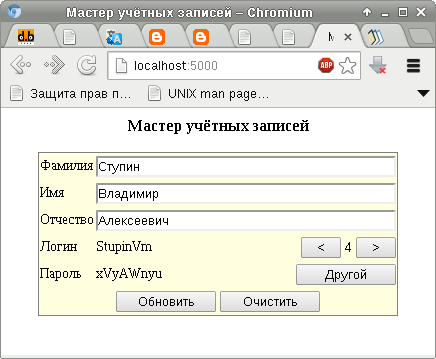

Примерно полтора года назад, когда я упражнялся в PHP, я написал для себя небольшую веб-страницу, с помощью которой генерировал учётные записи пользователей по принятым в компании стандартам.
В начале прошлого года я принялся за освоение Perl. Тогда я решил переписать эту веб-страницу на Perl, чтобы поближе познакомиться с модулем HTML::Template.
Теперь я вновь взял для теста эту веб-страницу и решил переписать её на Python, на этот раз для практического ознакомления с веб-фреймворком Flask.
Вспомогательные функции, занимающиеся собственно генерацией логинов и паролей, я вынес в отдельный модуль utils, дабы не перегружать пример. Основной модуль приложения располагается в файле main.py и выглядит следующим образом:
#!/usr/bin/python
# -*- coding: UTF-8 -*-
from flask import Flask, render_template, request
import utils
# Создаём новое приложение Flask
app = Flask(__name__, instance_path = '/home/stupin/flask',
instance_relative_config = True)
# Загружаем настройки приложения из файла конфигурации
app.config.from_pyfile('config.cfg')
# Генерация случайного пароля с использованием
# настроек из файла конфигурации
def random_password(length = app.config['PASS_LENGTH'],
chars = app.config['PASS_CHARS']):
return utils.random_password(length, chars)
# Генерация логина, длина которого указана в файле конфигурации
def login(*args, **kwargs):
if 'max_len' not in kwargs:
kwargs['max_len'] = app.config['LOGIN_LENGTH']
return utils.login(*args, **kwargs)
@app.route('/', methods = ['GET'])
def index_get():
return render_template('index.html', ilogin = 0,
password = random_password())
@app.route('/', methods = ['POST'])
def index_post():
surname = request.form.get('surname', '')
name = request.form.get('name', '')
patronym = request.form.get('patronym', '')
password = request.form.get('password', random_password())
ilogin = int(request.form.get('ilogin', 0))
# Если попросили предыдущий логин, уменьшаем номер логина на единицу
if 'prevlogin' in request.form:
ilogin = max(0, ilogin - 1)
# Если попросили следующий логин, увеличиваем номер логина на единицу
elif 'nextlogin' in request.form:
ilogin = max(0, ilogin + 1)
# Если попросили другой пароль, генерируем новый пароль
elif 'nextpassword' in request.form:
password = random_password()
# Если попросили очистить форму, чистим
elif 'reset' in request.form:
surname = ''
name = ''
patronym = ''
ilogin = 0
return render_template('index.html', surname = surname,
name = name,
patronym = patronym,
ilogin = ilogin,
password = password)
login = login(surname, name, patronym, ilogin),
ilogin = ilogin,
password = password)
# Запуск сервера, если этот модуль был запущен как программа
if __name__ == '__main__':
app.run(debug = True, host = '127.0.0.1', port = 5000)
И содержимое файла конфигурации config.cfg:
LOGIN_LENGTH = 12 PASS_LENGTH = 8 PASS_CHARS = 'abcdefhkmnpqrstuvwxyzABCDEFHKLMNPQRSTUVWXYZ23456789' DEBUG = False
Осталось запустить главный модуль в режиме отладки:
$ ./main.py
Получившееся приложение выглядит следующим образом:
Полный архив с приложением можно взять здесь.
Этот фреймворк привлёк меня в первую очередь своей похожестью на Perl-фреймворк Dancer, который, в своё время привлёк меня лёгкостью, простотой освоения и модульностью (кстати, он очень похож на Mojolicious::Lite). Flask чуть менее модульный и потому чуть более сложный. Положительная сторона заключается в том, что меньше приходится задумываться о выборе и настройке какого-то дополнительного модуля, потому что базовые компоненты уже есть в ядре и они лучше интегрированы между собой. Есть и другие доводы, заставившие меня попробовать этот фреймворк, но до них я пока не добрался и говорить о них сейчас рано.